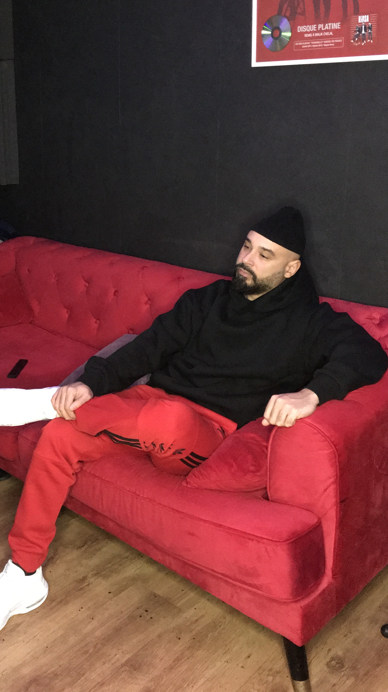
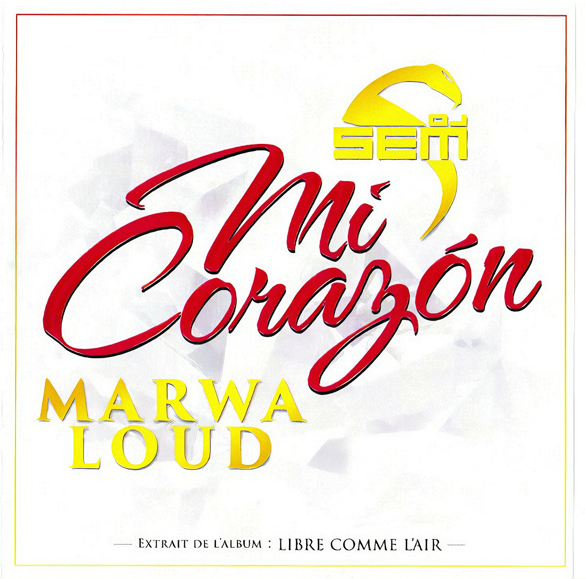
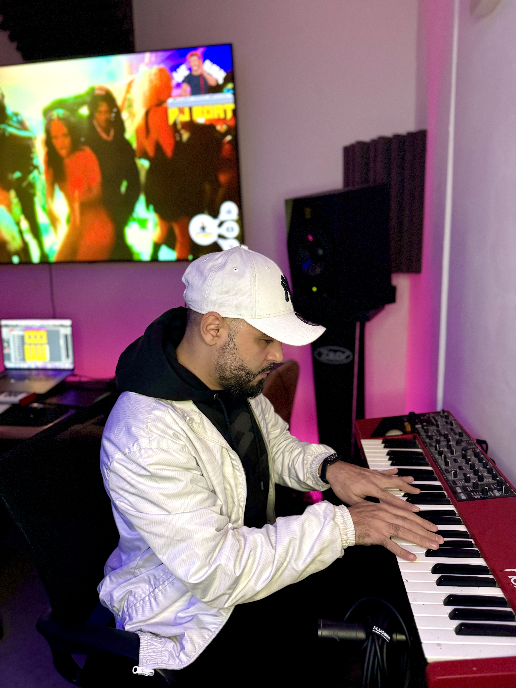
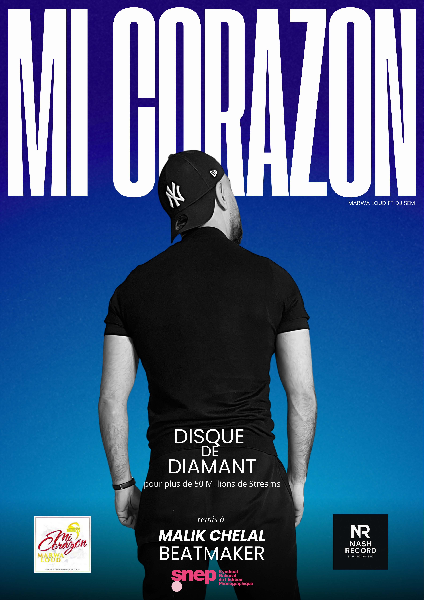

Univers visuel
Sultan Nash, en images




Fondateur · Beatmaker · DJ · Producteur
A.K.A. Malik Chelal · Beatmaker certifié Diamant
L'homme derrière Nash Record. Beatmaker certifié disque de Diamant pour le hit « Mi Corazón » de DJ Sem feat Marwa Loud — plus de 50 millions de streams. Cumulé sur l'ensemble de mes productions : 405 millions de streams, 1.7M Shazams, 178 crédits.
Certification SNEP 2024

Single Diamant · 50 000 000+ streams
DJ Sem feat. Marwa Loud · Album « Libre comme l'air »
Production signée Malik Chelal (DJ Sultan Nash). Certifié Disque de Diamant SNEP 2024 pour plus de 50 millions de streams. Le morceau a marqué la pop urbaine francophone et reste l'un des plus gros tubes des dernières années.
Stats beatmaker
Univers visuel


178 crédits · 405M streams
178 CRÉDITS DISCOGRAPHIQUES · 405M STREAMS · 1.7M SHAZAMS · CERTIFIÉ DIAMANT SNEP
Travailler avec Sultan
Tu veux le même standard de production que sur les hits multi-millions de streams ? DJ Sultan compose pour toi des prods sur mesure : toplines, instrumentations, arrangements. À partir de 250€.
Toutes les plateformes